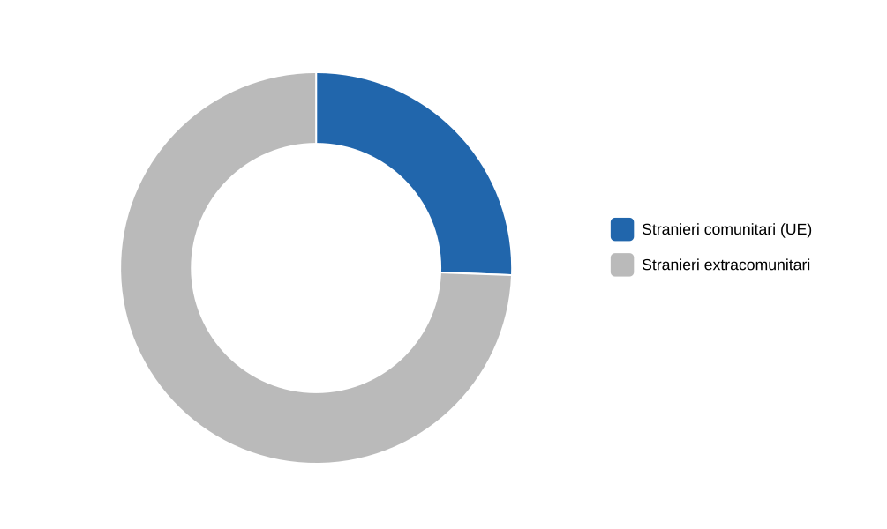
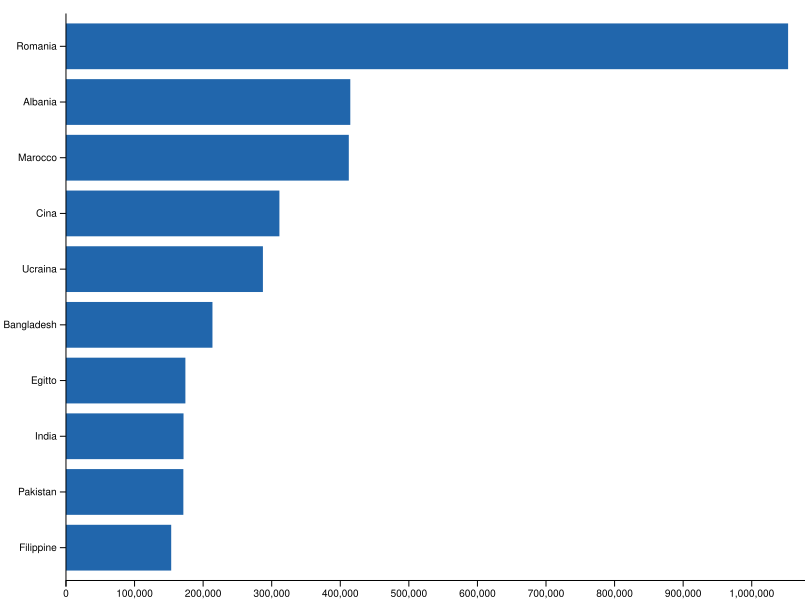
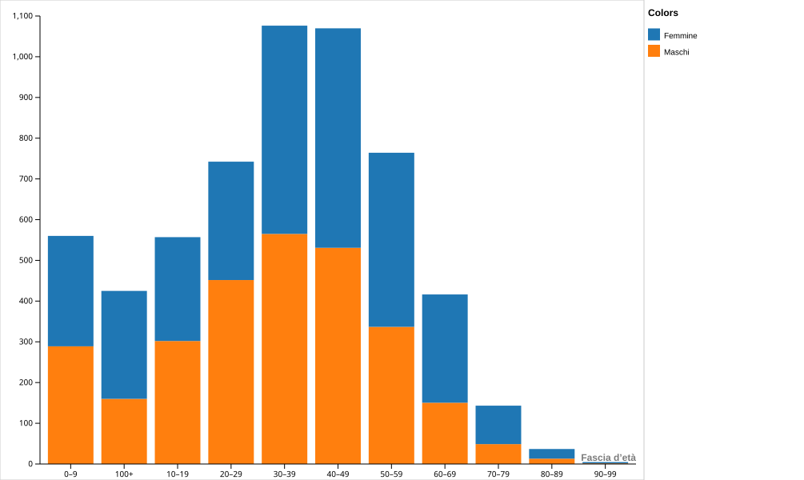
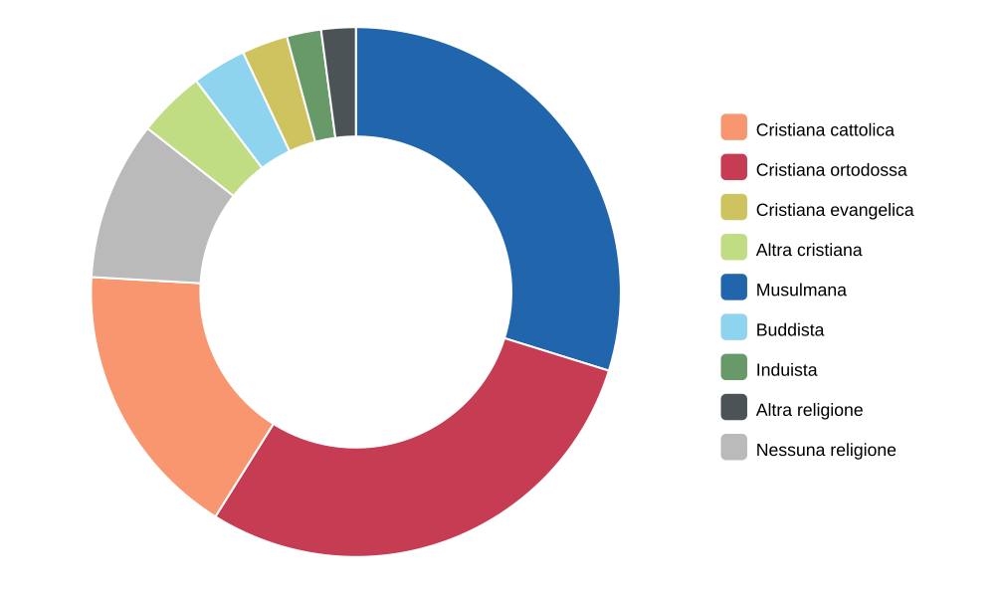
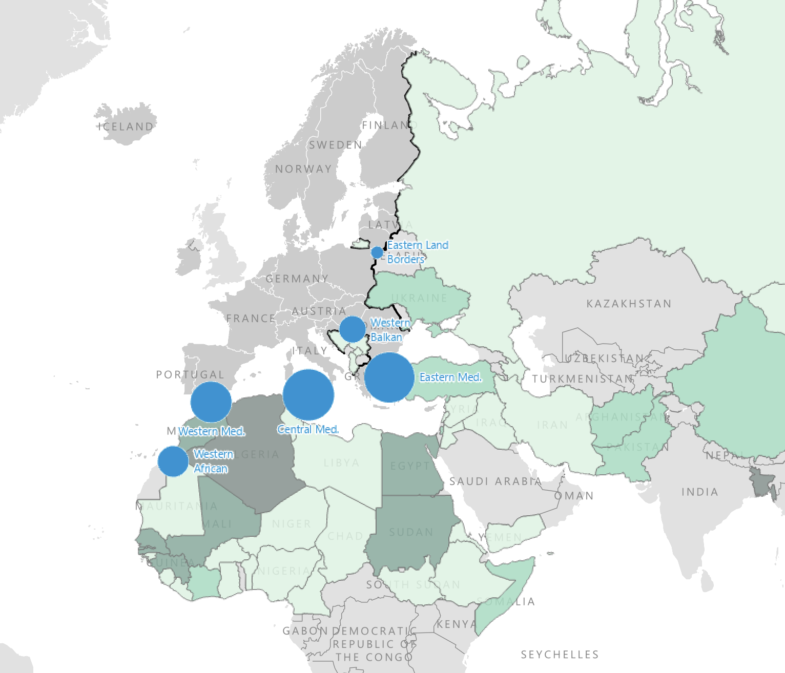

0. Overview
Quanti stranieri vivono in Italia?
Al 1° gennaio 2025 in Italia risiedono 5,42 milioni di cittadini stranieri, pari a circa il 9,2% della popolazione totale. La maggior parte è composta da cittadini provenienti da Paesi extra-UE, mentre poco più di un quarto è costituito da cittadini dell'Unione Europea. Questa distinzione è rilevante perché comporta differenze nei diritti di soggiorno e nelle modalità di ingresso previste dalla legge.

Fonte: ISTAT – Indicatori demografici 2024–2025
Da dove provengono?
La popolazione straniera residente in Italia è molto diversificata e riflette le principali direttrici dei flussi migratori europei, mediterranei e asiatici. Le comunità più numerose provengono da Romania, Albania e Marocco, seguite da Cina, Ucraina e altri Paesi extra-europei.

Fonte: ISTAT; Ministero del Lavoro e delle Politiche Sociali – XV Rapporto annuale (2025)
Come si distribuiscono per età e genere?
La popolazione straniera è mediamente più giovane rispetto a quella italiana e presenta una distribuzione di genere sostanzialmente equilibrata tra uomini e donne. La maggiore concentrazione si registra nelle fasce di età attiva, con una presenza significativa di minorenni.

Fonte: ISTAT – Popolazione residente per età e sesso (2025)
Qual è la religione prevalente?
Tra gli stranieri residenti in Italia prevalgono le confessioni cristiane, seguite dall'Islam. Sono inoltre presenti altre religioni e una quota di persone non credenti. Il dato evidenzia la pluralità religiosa della società italiana contemporanea.

Fonte: Fondazione ISMU – Rapporto sulle migrazioni 2024/2025
1. Stereotipi, pregiudizi, discriminazioni
STEREOTIPO
lo stereotipo è Credenza in base a cui un gruppo di individui attribuisce determinate caratteristiche in maniera indistinta a un altro gruppo di persone.
Credenza (positiva o negativa) approssimativa e rigida su un gruppo di persone. Il pensiero stereotipato consente di regolarizzare un fenomeno a cui assistiamo, ossia attraverso la generalizzazione mette ordine nel disordine.
PREGIUDIZIO
Predisposizione a percepire, pensare, giudicare in modo sfavorevole nei confronti di una persona appartenente ad una categoria diversa dalla propria.
Giudizio immotivato che precede la reale conoscenza, si fonda sulle paure e le fobie dell'individuo, il timore verso il diverso, nei confronti di quello che non conosciamo.
DISCRIMINAZIONE
Trattamento non paritario attuato nei confronti di un individuo o di un gruppo di individui sulla base dell'appartenenza di questi ultimi ad un particolare gruppo, classe o categoria sociale.
Differenza di trattamento fra soggetti non giustificata da ragioni oggettive e ragionevoli che mira a provocare l'esclusione sociale del soggetto vittima del comportamento discriminatorio.
«Generalmente sono di piccola statura e di pelle scura. Molti puzzano perché tengono lo stesso vestito per settimane. Si costruiscono baracche nelle periferie. Quando riescono ad avvicinarsi al centro affittano a caro prezzo appartamenti fatiscenti. Si presentano in 2 e cercano una stanza con uso cucina. Dopo pochi giorni diventano 4, 6, 10. Parlano lingue incomprensibili, forse dialetti. Molti bambini vengono utilizzati per chiedere l'elemosina; spesso davanti alle chiese donne e uomini anziani invocano pietà, con toni lamentosi e petulanti. Fanno molti figli che faticano a mantenere e sono assai uniti tra di loro. Dicono che siano dediti al furto e, se ostacolati, violenti. Le nostre donne li evitano sia perché poco attraenti e selvatici, sia perché è voce diffusa di stupri consumati quando le donne tornano dal lavoro. I governanti hanno aperto troppo gli ingressi alle frontiere ma, soprattutto, non hanno saputo selezionare tra coloro che entrano nel paese per lavorare e quelli che pensano di vivere di espedienti o, addirittura, di attività criminali».
Fonte: Relazione dell'Ispettorato per l'immigrazione del Congresso degli Stati Uniti sugli immigrati italiani, ottobre 1919.
2. Il potere del passaporto
Il passaporto non è solo un documento di viaggio, ma uno strumento che riflette:
- le relazioni diplomatiche tra Stati;
- le disuguaglianze globali;
- il valore concreto della cittadinanza.
Il potere di un passaporto indica la libertà di movimento internazionale concessa ai cittadini di uno Stato. Un passaporto è considerato "forte" quando permette di entrare in molti Paesi senza visto o con procedure semplificate. Al contrario, un passaporto "debole" limita fortemente la possibilità di viaggiare, incidendo sulle opportunità personali, lavorative e culturali.
Come si misura la forza di un passaporto
Passport Index calcola la forza di un passaporto tramite il Mobility Score (MS), basato sul numero di paesi e territori che possono essere visitati senza visto preventivo. Sono considerati tre tipi di accesso:
- ingresso senza visto;
- visto all'arrivo;
- autorizzazioni elettroniche rapide (ETA/eVisa) rilasciate entro pochi giorni.
Non vengono conteggiati i paesi per cui è necessario richiedere un visto con largo anticipo.
Fonte: Passport Index
I passaporti più potenti oggi
Secondo Passport Index:
- gli Emirati Arabi Uniti sono tra i passaporti più potenti, con accesso a circa 180 Paesi;
- Singapore, Giappone e Corea del Sud seguono con punteggi molto simili;
- anche diversi paesi dell’Unione Europea si collocano ai primi posti.
Questi passaporti garantiscono una mobilità internazionale molto ampia, soprattutto per turismo, studio e lavoro.
I passaporti più deboli
All'estremo opposto della classifica si collocano Paesi colpiti da conflitti, instabilità politica o isolamento diplomatico. I passaporti di Afghanistan, Siria, Iraq e Somalia consentono l'ingresso senza visto solo in un numero molto limitato di Stati, spesso meno di 40. Questo evidenzia come la libertà di movimento non sia uguale per tutti, ma dipenda fortemente dalla cittadinanza.
Il passaporto italiano oggi
Il passaporto italiano rientra stabilmente tra i più forti al mondo e consente l'accesso senza visto preventivo a oltre 170 Paesi. Inoltre, grazie all'Unione Europea e all'area Schengen, i cittadini italiani possono spostarsi liberamente in gran parte dell'Europa anche solo con la carta d'identità.
3. Rotte migratorie verso l'Italia
| Tipologia di fattori | Fattori di spinta (Push factors) | Fattori di attrazione (Pull factors) |
|---|---|---|
| Fattori sociali e demografici |
• Crescita della popolazione • Strutture formative, mediche e di welfare state inadeguate • Decisioni prese dalla famiglia o dal clan |
• Stabilità o riduzione demografica • Invecchiamento della popolazione • Strutture formative, mediche e di welfare state adeguate • Presenza di comunità etniche nate da precedenti flussi migratori |
| Fattori economici |
• Disoccupazione • Bassi salari • Povertà • Bassi livelli di consumo e scarsa qualità della vita |
• Disponibilità di posti di lavoro • Salari elevati • Benessere economico • Alti livelli di consumo e qualità della vita |
| Fattori politici |
• Dittature e scarsa democraticità • Malgoverno e instabilità politica • Guerre e conflitti • Persecuzioni etniche, religiose, razziali, politiche e culturali • Mancata tutela dei diritti umani, sociali e civili |
• Democrazia, legalità e pluralismo • Stabilità politica • Pace e sicurezza • Tutela dei diritti umani e civili • Protezione delle minoranze |
| Fattori ambientali |
• Disastri naturali aggravati dai cambiamenti climatici (siccità, desertificazione, erosione del suolo…) • Assenza di politiche ambientali • Carenza o sfruttamento delle risorse naturali |
• Migliori condizioni ambientali e climatiche • Politiche ambientali efficaci • Protezione delle risorse naturali e dell'ambiente |

4. Divisione del mare e zone SAR
Il diritto del mare: quadro generale
Il diritto del mare è l’insieme delle norme internazionali che regolano l’uso dei mari e degli oceani e definiscono i diritti e i doveri degli Stati.
Principali fonti del diritto del mare
- Convenzione delle Nazioni Unite sul diritto del mare: stabilisce le regole generali sull’utilizzo degli spazi marittimi.
- Convenzione di Amburgo: disciplina la cooperazione internazionale per la ricerca e il soccorso in mare (Search and Rescue – SAR).
- Convenzione di Ginevra: definisce le norme sul mare territoriale e sulla zona contigua.
Come è diviso il mare
Dal punto di vista giuridico, il mare è suddiviso in diverse zone, ognuna con un diverso livello di sovranità statale.
- Mare territoriale
Si estende per circa 22 km dalla costa.
Lo Stato esercita una sovranità piena, come sulla terraferma. - Zona contigua
Si estende indicativamente tra i 22 km e i 40 km dalla costa.
Lo Stato può esercitare poteri di controllo sulle navi straniere per prevenire o reprimere reati. - Zona economica esclusiva (ZEE)
Si estende oltre il mare territoriale.
Lo Stato ha diritti limitati allo sfruttamento economico delle risorse naturali. - Acque internazionali
Non appartengono a nessuno Stato.
Nessuno può esercitare sovranità su queste acque.
Zone SAR (Search and Rescue)
Le zone SAR sono aree di mare dedicate alle operazioni di ricerca e soccorso.
- Sono aree in cui uno Stato costiero:
- garantisce un servizio di ricerca e salvataggio;
- coordina gli interventi in caso di emergenza.
- Possono comprendere:
- acque su cui lo Stato ha sovranità (mare territoriale);
- acque su cui lo Stato non ha sovranità, ma assume una responsabilità operativa (ZEE e alcune aree di acque internazionali).
Nel Mediterraneo, le zone SAR sono stabilite tramite accordi tra gli Stati costieri.
Il concetto di porto sicuro
Dopo un’operazione di soccorso in mare:
- le persone soccorse devono essere sbarcate in un porto sicuro;
- il porto sicuro deve garantire:
- prossimità geografica;
- rispetto dei diritti umani;
- tutela dell’incolumità delle persone.
Soccorso in mare e favoreggiamento dell’immigrazione clandestina
È importante distinguere tra due situazioni diverse:
- Soccorso in mare
È un obbligo giuridico e umanitario.
Serve a salvare persone in pericolo, indipendentemente dalla loro nazionalità o condizione. - Favoreggiamento dell’immigrazione clandestina
È un reato.
Riguarda chi organizza, finanzia o realizza il trasporto illegale di persone nel territorio di uno Stato.
È punito con sanzioni penali.
5. Tipologie di protezioni
Asilo e protezione internazionale
Inquadramento giuridico, diritti e procedure
Questa sezione approfondisce il funzionamento della procedura di asilo e delle diverse forme di protezione previste dall’ordinamento italiano ed europeo, chiarendo definizioni, passaggi fondamentali e possibili esiti.
Definizioni fondamentali
Nel linguaggio giuridico, alcuni termini hanno un significato preciso:
- Straniero: persona che non possiede la cittadinanza italiana. In ambito europeo, indica chi non è cittadino di alcuno Stato membro dell’Unione Europea.
- Immigrato: persona che si sposta in uno Stato diverso da quello di residenza abituale con l’intenzione di rimanervi per un periodo superiore a un anno.
- Migrante forzato: persona costretta a lasciare il proprio paese a causa di conflitti, persecuzioni, violenze o gravi violazioni dei diritti umani.
- Richiedente asilo: persona che chiede protezione a uno Stato diverso dal proprio ed è in attesa di una decisione sulla domanda di protezione internazionale.
Asilo e protezione internazionale
Il diritto di asilo è riconosciuto a livello:
- internazionale (Convenzione di Ginevra del 1951),
- europeo (Sistema Comune Europeo di Asilo – CEAS),
- nazionale (Costituzione italiana e normativa ordinaria).
Per chiedere asilo è necessario trovarsi fisicamente nel territorio dello Stato in cui si presenta la domanda. Questo requisito pone un problema concreto: l’accesso regolare al territorio, tramite visti o canali legali, è spesso limitato o non accessibile per chi fugge da situazioni di pericolo.
Ingressi, visti e permesso di soggiorno
L’ingresso regolare in Italia avviene tramite visti, ma:
- non esistono visti per “cercare asilo”,
- i canali legali di ingresso sono limitati e selettivi.
Una volta manifestata la volontà di chiedere protezione, la persona entra nella procedura di asilo e ottiene un permesso di soggiorno temporaneo, valido fino alla decisione definitiva.
Il Sistema Comune Europeo di Asilo (CEAS)
Il CEAS stabilisce criteri comuni tra gli Stati membri dell’Unione Europea per:
- l’accesso alla procedura di asilo,
- l’esame delle domande,
- il riconoscimento delle forme di protezione.
Nonostante l’armonizzazione normativa, l’applicazione concreta varia da Stato a Stato.
La procedura di asilo
Accesso alla procedura e manifestazione della volontà
La procedura inizia quando una persona manifesta la volontà di chiedere protezione:
- alla polizia di frontiera, se la richiesta avviene all’ingresso,
- oppure presso la Questura, se la persona è già sul territorio.
Registrazione della domanda
Entro 3–6 giorni dalla manifestazione della volontà, la richiesta viene formalmente registrata. Questa fase comprende:
- informativa sui diritti e doveri,
- rilievi fotodattiloscopici (fotosegnalamento),
- compilazione del modello C3, che contiene la storia personale e le motivazioni della richiesta,
- rilascio del permesso di soggiorno per richiesta asilo.
Accoglienza
Il richiedente asilo ha diritto all’inserimento nel sistema pubblico di accoglienza:
- immediatamente, se la richiesta è manifestata in frontiera,
- al momento della registrazione, se la domanda è presentata sul territorio.
Durante questa fase, la persona vive nel territorio italiano e può iniziare percorsi di apprendimento linguistico, formazione e lavoro.
La Commissione Territoriale
La Commissione Territoriale per il riconoscimento della protezione internazionale è l’autorità amministrativa competente a valutare la domanda di asilo.
In Italia operano 41 Commissioni, insediate presso alcune Prefetture.
La Commissione esamina:
- il modello C3 e la documentazione allegata,
- le dichiarazioni del richiedente,
- le informazioni sul paese di origine.
L’audizione personale
Il colloquio personale è un momento centrale della procedura:
- la convocazione avviene per iscritto,
- il colloquio si svolge con un funzionario e un interprete,
- riguarda la storia personale, il contesto di provenienza e i motivi della richiesta.
L’audizione serve a:
- identificare il richiedente,
- raccogliere elementi di conoscenza,
- valutare la credibilità del racconto.
Le informazioni sui paesi di origine (COI)
Le Country of Origin Information (COI) sono dati, analisi e documentazione tecnica utilizzate per valutare:
- la situazione politica, sociale ed economica di un paese,
- il rischio effettivo in caso di rimpatrio.
Le COI sono fondamentali per verificare la fondatezza della richiesta di protezione.
Le possibili decisioni (“qualifiche”)
Protezione internazionale
- Status di rifugiato: riconosciuto a chi teme a ragione persecuzioni per motivi di razza, religione, nazionalità, appartenenza a un gruppo sociale o opinioni politiche.
- Protezione sussidiaria: concessa quando non sussistono i requisiti per lo status di rifugiato, ma esiste un rischio effettivo di danno grave in caso di ritorno.
Protezioni complementari
Comprendono:
- protezione speciale,
- protezione per motivi sociali (tratta, violenza domestica o di genere),
- protezione per gravi motivi di salute,
- protezione per calamità naturali.
La protezione speciale tutela la persona dal respingimento o dall’espulsione verso paesi in cui rischierebbe persecuzioni, torture o gravi violazioni dei diritti umani.
Rigetto della domanda
La richiesta può essere respinta per:
- non credibilità,
- assenza di elementi sufficienti,
- informazioni sul paese di origine,
- motivi procedurali.
In caso di rigetto:
- può essere intimato il rimpatrio,
- la persona può proporre ricorso al Tribunale,
- in alternativa, può trovarsi in una situazione di irregolarità.
Il ricorso giudiziario
Il ricorso consente di sottoporre la decisione della Commissione al vaglio di un giudice.
Salvo eccezioni:
- il ricorso sospende l’efficacia del provvedimento,
- la persona resta regolarmente soggiornante,
- può continuare a lavorare e studiare.
Il Tribunale valuta se sussistono le condizioni per il riconoscimento di una forma di protezione e comunica la decisione con ordinanza scritta.
Procedure accelerate e casi particolari
Esistono procedure con tempi ridotti e minori garanzie, applicate in casi specifici:
- paesi di origine considerati “sicuri”,
- richieste presentate in frontiera,
- precedenti penali,
- domande reiterate.
In queste procedure:
- i tempi sono fortemente compressi,
- l’onere della prova può essere invertito,
- la presunzione è di strumentalità della domanda.
Vulnerabilità
La normativa riconosce particolare tutela a persone in condizioni di vulnerabilità, tra cui:
- minori e minori non accompagnati,
- persone con disabilità o gravi malattie,
- donne in gravidanza,
- vittime di tratta, tortura o violenza.
I minori stranieri non accompagnati non possono essere considerati irregolari e hanno diritto alla nomina di un tutore legale.
Protezione temporanea
In situazioni eccezionali, come il conflitto in Ucraina, l’Unione Europea può attivare una protezione temporanea, che consente:
- soggiorno regolare,
- lavoro,
- studio,
- accesso ai servizi e all’accoglienza.
La protezione temporanea è distinta dalla procedura di asilo e, in linea generale, non è compatibile con essa.
6. Il sistema dell'accoglienza in Italia
Questo è il testo segnaposto per la sezione Il sistema dell'accoglienza in Italia. Qui puoi dettagliare come funziona il sistema di accoglienza italiano.
7. Professionisti dell'accoglienza
I sistemi di accoglienza per persone migranti si basano sul lavoro coordinato di diverse figure professionali, ciascuna con competenze e responsabilità specifiche. L’intervento non è mai affidato a un singolo operatore, ma a un’équipe multidisciplinare che opera in modo integrato per rispondere ai bisogni sociali, educativi, sanitari e amministrativi delle persone accolte. Conoscere i ruoli dei professionisti dell’accoglienza permette di comprendere come funzionano concretamente questi servizi, quali sono i confini di intervento di ciascuna figura e in che modo la collaborazione tra competenze diverse contribuisce alla costruzione di percorsi di tutela, inclusione e autonomia.
8. MSNA
Questo è il testo segnaposto per la sezione MSNA (Minori Stranieri Non Accompagnati). Qui puoi affrontare le problematiche specifiche dei minori migranti.